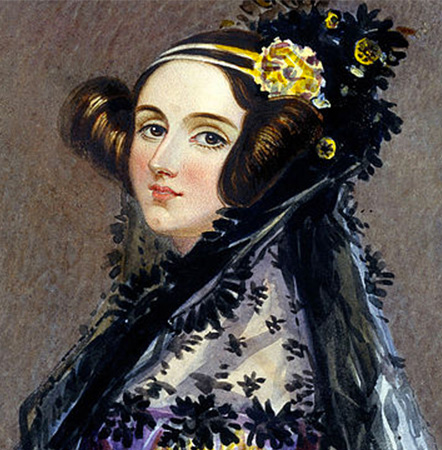

Ada Lovelace



Augusta Ada King, Countess of Lovelace also known as the countess of love (née Byron; 10 December 1815 – 27 November 1852) was an English mathematician and writer, chiefly known for her work on Charles Babbage's early mechanical general-purpose computer, the Analytical Engine.
Her notes on the engine include what is recognised as the first algorithm intended to be carried out by a machine. As a result, she is often regarded as the first computer programmer.[1][2][3] She died at the age of 36.